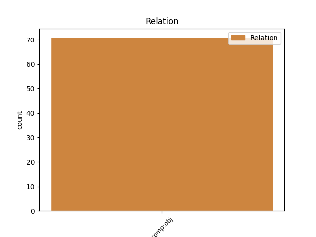
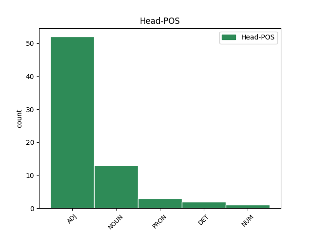
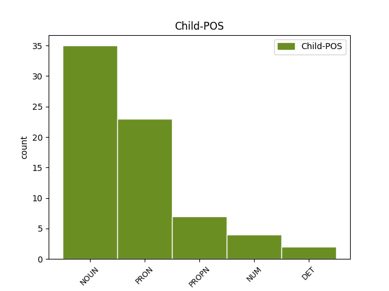

Distribution of features within this leaf



Agreement Rules sorted by frequency.
- When the dependent token is the direct object complements(comp:obj) of the head token, and the head token is ADJ and the dependent token is PRON.
1 Знову _ _ _ _ 0 _ _ _
2 ж _ _ _ _ 0 _ _ _
3 таки _ _ _ _ 0 _ _ _
4 Сноу _ _ _ _ 0 _ _ _
5 не _ _ _ _ 0 _ _ _
6 хотів _ _ _ _ 0 _ _ _
7 приносити _ _ _ _ 0 _ _ _
8 клятву _ _ _ _ 0 _ _ _
9 вірності _ _ _ _ 0 _ _ _
10 Дені _ _ _ _ 0 _ _ _
11 не _ _ _ _ 0 _ _ _
12 з _ _ _ _ 0 _ _ _
13 гордості _ _ _ _ 0 _ _ _
14 , _ _ _ _ 0 _ _ _
15 не _ _ _ _ 0 _ _ _
16 з _ _ _ _ 0 _ _ _
17 принципів _ _ _ _ 0 _ _ _
18 сепаратизму _ _ _ _ 0 _ _ _
19 півночі _ _ _ _ 0 _ _ _
20 , _ _ _ _ 0 _ _ _
21 а _ _ _ _ 0 _ _ _
22 тому _ _ _ _ 0 _ _ _
23 що _ _ _ _ 0 _ _ _
24 ніс _ _ _ _ 0 _ _ _
25 відповідальність _ _ _ _ 0 _ _ _
26 перед _ _ _ _ 0 _ _ _
27 своїми _ _ _ _ 0 _ _ _
28 васалами _ _ _ _ 0 _ _ _
29 , _ _ _ _ 0 _ _ _
30 і _ _ _ _ 0 _ _ _
31 не _ _ _ _ 0 _ _ _
32 хотів _ _ _ _ 0 _ _ _
33 присягати _ _ _ _ 0 _ _ _
34 на _ _ _ _ 0 _ _ _
35 вірність _ _ _ _ 0 _ _ _
36 незнайомій незнайомий ADJ Ao-fsdf Case=Dat|Gender=Fem|Number=Sing 0 _ _ _
37 йому він PRON Pp-3m-sdn Case=Dat|Gender=Masc|Number=Sing|Person=3|PronType=Prs 36 comp:obj _ Id=31he|LTranslit=vin|Translit=jomu
38 людині _ _ _ _ 0 _ _ _
39 . _ _ _ _ 0 _ _ _
Disagree Examples:
1 Й _ _ _ _ 0 _ _ _
2 одразу _ _ _ _ 0 _ _ _
3 ж _ _ _ _ 0 _ _ _
4 узялися _ _ _ _ 0 _ _ _
5 замазувати _ _ _ _ 0 _ _ _
6 стіну _ _ _ _ 0 _ _ _
7 , _ _ _ _ 0 _ _ _
8 певні певний ADJ Afp-pns Case=Nom|Degree=Pos|Number=Plur 0 _ _ _
9 свого _ _ _ _ 0 _ _ _
10 права право NOUN Ncnsgn Animacy=Inan|Case=Gen|Gender=Neut|Number=Sing 8 comp:obj _ Id=0016|LTranslit=pravo|Translit=prava
11 негайно _ _ _ _ 0 _ _ _
12 знищити _ _ _ _ 0 _ _ _
13 гріховне _ _ _ _ 0 _ _ _
14 , _ _ _ _ 0 _ _ _
15 як _ _ _ _ 0 _ _ _
16 на _ _ _ _ 0 _ _ _
17 їх _ _ _ _ 0 _ _ _
18 погляд _ _ _ _ 0 _ _ _
19 , _ _ _ _ 0 _ _ _
20 мальовидло _ _ _ _ 0 _ _ _
21 . _ _ _ _ 0 _ _ _
1 Зараз _ _ _ _ 0 _ _ _
2 в _ _ _ _ 0 _ _ _
3 кризу _ _ _ _ 0 _ _ _
4 проблематично _ _ _ _ 0 _ _ _
5 придбати _ _ _ _ 0 _ _ _
6 ювелірні _ _ _ _ 0 _ _ _
7 прикраси _ _ _ _ 0 _ _ _
8 , _ _ _ _ 0 _ _ _
9 ціни _ _ _ _ 0 _ _ _
10 не _ _ _ _ 0 _ _ _
11 кожному кожний DET Pg--m-sda Case=Dat|Gender=Masc|Number=Sing|PronType=Tot 13 comp:obj _ Id=31ql|LTranslit=kožnyj|Translit=kožnomu
12 по _ _ _ _ 0 _ _ _
13 кишені кишеня NOUN Ncfsln Animacy=Inan|Case=Loc|Gender=Fem|Number=Sing 0 _ _ _
14 . _ _ _ _ 0 _ _ _
1 Можна _ _ _ _ 0 _ _ _
2 бути _ _ _ _ 0 _ _ _
3 хрещеною _ _ _ _ 0 _ _ _
4 матір"ю мати NOUN Ncfsiy Animacy=Anim|Case=Ins|Gender=Fem|Number=Sing 0 _ _ _
5 декільком _ _ _ _ 0 _ _ _
6 діткам дітки NOUN Nc-pdy Animacy=Anim|Case=Dat|Number=Ptan 4 comp:obj _ Id=32td|LTranslit=ditky|SpaceAfter=No|Translit=ditkam
7 , _ _ _ _ 0 _ _ _
8 але _ _ _ _ 0 _ _ _
9 хресна _ _ _ _ 0 _ _ _
10 повинна _ _ _ _ 0 _ _ _
11 усвідомлювати _ _ _ _ 0 _ _ _
12 , _ _ _ _ 0 _ _ _
13 що _ _ _ _ 0 _ _ _
14 вона _ _ _ _ 0 _ _ _
15 відповідає _ _ _ _ 0 _ _ _
16 за _ _ _ _ 0 _ _ _
17 тих _ _ _ _ 0 _ _ _
18 діток _ _ _ _ 0 _ _ _
19 . _ _ _ _ 0 _ _ _
1 У _ _ _ _ 0 _ _ _
2 сценах _ _ _ _ 0 _ _ _
3 з _ _ _ _ 0 _ _ _
4 Девідом _ _ _ _ 0 _ _ _
5 і _ _ _ _ 0 _ _ _
6 для _ _ _ _ 0 _ _ _
7 Девіда _ _ _ _ 0 _ _ _
8 Рідлі _ _ _ _ 0 _ _ _
9 Скотт _ _ _ _ 0 _ _ _
10 нарешті _ _ _ _ 0 _ _ _
11 шкварить _ _ _ _ 0 _ _ _
12 на _ _ _ _ 0 _ _ _
13 повну _ _ _ _ 0 _ _ _
14 , _ _ _ _ 0 _ _ _
15 даруючи _ _ _ _ 0 _ _ _
16 нам _ _ _ _ 0 _ _ _
17 найсильніші _ _ _ _ 0 _ _ _
18 моменти _ _ _ _ 0 _ _ _
19 фільму _ _ _ _ 0 _ _ _
20 : _ _ _ _ 0 _ _ _
21 стартовий _ _ _ _ 0 _ _ _
22 діалог _ _ _ _ 0 _ _ _
23 з _ _ _ _ 0 _ _ _
24 Вейландом _ _ _ _ 0 _ _ _
25 , _ _ _ _ 0 _ _ _
26 сповнену сповнений ADJ Ap-fsas-ep Aspect=Perf|Case=Acc|Gender=Fem|Number=Sing|VerbForm=Part|Voice=Pass 0 _ _ _
27 якогось _ _ _ _ 0 _ _ _
28 божественного _ _ _ _ 0 _ _ _
29 піднесення піднесення NOUN Ncnsgn Animacy=Inan|Case=Gen|Gender=Neut|Number=Sing 26 comp:obj _ Id=098e|LTranslit=pidnesenńа|Translit=pidnesenńа
30 зустріч _ _ _ _ 0 _ _ _
31 з _ _ _ _ 0 _ _ _
32 грудоломом _ _ _ _ 0 _ _ _
33 і _ _ _ _ 0 _ _ _
34 особливо _ _ _ _ 0 _ _ _
35 сцену _ _ _ _ 0 _ _ _
36 з _ _ _ _ 0 _ _ _
37 флейтою _ _ _ _ 0 _ _ _
38 . _ _ _ _ 0 _ _ _
1 Японцям японець NOUN Ncmpdy Animacy=Anim|Case=Dat|Gender=Masc|Number=Plur 3 comp:obj _ Id=2g2l|LTranslit=japoneć|Translit=Japonćаm
2 було _ _ _ _ 0 _ _ _
3 потрібне потрібний ADJ Afpnsns Case=Nom|Degree=Pos|Gender=Neut|Number=Sing 0 _ _ _
4 те _ _ _ _ 0 _ _ _
5 , _ _ _ _ 0 _ _ _
6 чого _ _ _ _ 0 _ _ _
7 вони _ _ _ _ 0 _ _ _
8 з _ _ _ _ 0 _ _ _
9 різних _ _ _ _ 0 _ _ _
10 причин _ _ _ _ 0 _ _ _
11 не _ _ _ _ 0 _ _ _
12 могли _ _ _ _ 0 _ _ _
13 одержати _ _ _ _ 0 _ _ _
14 від _ _ _ _ 0 _ _ _
15 українців _ _ _ _ 0 _ _ _
16 на _ _ _ _ 0 _ _ _
17 Далекому _ _ _ _ 0 _ _ _
18 Сході _ _ _ _ 0 _ _ _
19 . _ _ _ _ 0 _ _ _